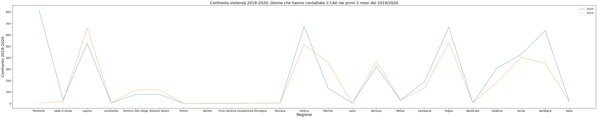

INTRODUZIONE
Solo da pochi anni la violenza sulle donne è diventato tema e dibattito pubblico. Le ricerche compiute negli ultimi dieci anni affermano che le vittime e i loro aggressori appartengono a tutte le classi sociali o culturali e a tutti i ceti economici.
Secondo l'Organizzazione mondiale della sanità almeno una donna su cinque ha subito abusi fisici o sessuali da parte di un uomo nel corso della sua vita. Il rischio maggiore sono i familiari, mariti e padri, seguiti dagli amici: vicini di casa, conoscenti stretti e colleghi di lavoro o di studio.
DEFINIZIONE
La dichiarazione delle Nazioni definisce la violenza contro le donne “qualsiasi atto di violenza di genere che provoca o possa provocare danni fisici, sessuali o psicologici alle donne, incluse le minacce di tali atti, la coercizione o la privazione arbitraria della libertà, sia che si verifichi nella vita pubblica o privata”.
In ambito europeo, la Convenzione del Consiglio d’Europa sulla prevenzione e la lotta contro la violenza, la cosiddetta convenzione di Istanbul (2011), definisce la violenza di genere come qualsiasi violenza diretta contro una donna in quanto tale, o che colpisce le donne in modo sproporzionato (art.3).
Il CASO ITALIA
Confronto violenza sulle donne 2018-2020

La cartina interattiva sopra riportata fornisce una analisi relativa al confronto delle casistiche di violenza sulle donne negli anni 2018, 2019, 2020.
La rappresentazione dei dati è realizzata in scala di colori: dal più chiaro, il numero più basso di casi, al più scuro, i valori più alti. La cartina è suddivisa per regione, provincia e numero di violenze.
Attraverso il passaggio del cursore sulla cartina si possono visualizzare i dati relativi ad una determinata regione e alle violenze suddivise per province.
Dai dati ci si poteva aspettare una suddivisone per aree greografiche, in reltà le violenze sono sparse per tutta italia in modo indistinto, senza differenze palesi tra nord, centro e sud italia.
Nel 2020, nella maggior parte delle province, i dati sono aumentati in maniera significativa a causa della chiusura totale delle regioni a causa del lockdown.
CENTRO ANTI VIOLENZA
CENTRO ANTI VIOLENZA: LA NASCITA
I primi Centri antiviolenza sono nati solo alla fine degli anni novanta ad opera di associazioni di donne provenienti dal movimento delle donne, tra cui "Casa delle donne per non subire violenza" di Bologna e "Casa delle donne maltrattate" di Milano. Ad oggi sono varie le organizzazioni che lavorano sui vari tipi di violenza di genere. I Centri antiviolenza in Italia si sono riuniti nella Rete nazionale dei Centri antiviolenza e delle Case delle donne.
Nel 2008 è nata una federazione nazionale che riunisce 80 Centri antiviolenza in tutta Italia dal nome "D.i.Re: Donne in Rete contro la violenza alle donne”.
D.i.Re fa parte dell'organizzazione europea WAVE, network Europeo dei Centri antiviolenza che raccoglie oltre 5.000 associazioni di donne.
CENTRO ANTI VIOLENZA E CASE RIFUGIO
Insieme ai Centri antiviolenza, le Case rifugio costituiscono una rete territoriale di servizi specializzati che lavorano sulla base di una metodologia dell'accoglienza basata su un approccio di genere e sui principi della Convenzione di Istanbul.
Il servizio è a titolo gratuito, indipendente dal luogo di residenza. Ha l'obiettivo di avviare un percorso di recupero in una situazione protetta. La casa di ospitalità offre protezione e aiuto concreto alle donne che si trovano in una situazione di pericolo per la propria incolumità fisica e/o psicologica e non hanno altre soluzioni abitative possibili.
Analisi dei dati

Grazie a questo grafico abbiamo una conferma di quanto detto precedente: nei primi 5 mesi del 2020 si può notare un aumento della richiesta di aiuto ai centri anti-violenza (CAV) in conformità con l'inizio della pandemia.
Si può notare come nel 2020 in regioni come Umbria, Veneto, Piemonte, Puglia, Sicilia e Sardegna abbiamo dei picchi di richieste di aiuto da parte di donne vittime di violenza rispetto ai primi 5 mesi del 2019.
i dati presi in considerazione riguardano i primi 5 mesi del 2020, in quanto sono stati i più significativi considerando il fatto che il primo lockdown totale è avvenuto da Marzo a Giugno 2020.
Numero centri anti-violenza e case rifugio per Regione

L'attenzione ora si volge sulla presenza di case rifugio e centri anti-violenza presenti nelle diverse regioni.
Da questo grafico si evince come la distribuzione non sia uniforme per ogni regione; ad esempio possiamo notare come in Trentino non siano presenti nè case rifugio nè centri anti-violenza.
Possiamo inoltre notare come in Abruzzo e in Basilicata non siano presenti case rifugio, ma solo centri anti-violenza.
Come le vittime hanno contattato i centri anti-violenza e le case rifugio?

Come possiamo notare dal grafico, le richieste di aiuto sono state effettuate tramite chat e chiamate.
In generale le richieste di aiuto tramite chiamata è nettamente superiore rispetto alle richieste di aiuto via chat.
Possiamo però notare come durante il periodo del primo quadrimestre (gennaio-aprile) i dati non sono particolarmente significativi, ma superiori rispetto agli anni precedenti con un aumento delle richieste di aiuto via chat.
Nel secondo quadrimestre (maggio-agosto) possiamo notare una impennata significativa delle richieste di aiuto in seguito ad un allentamento delle misure e dalla riapertura delle regioni. Le donne non ritrovandosi sempre in casa con gli aggressori hanno avuto modo di contattare e denunciare le violenze subite nei mesi precedenti liberamente.
Infine, considerando il terzo quadrimestre (settembre-dicembre) durante il quale sono stati effettuati dei mini lockdown per regione, possiamo notare come le chiamate siano aumentate, ma non in maniera così esponenziale come nel secondo quadrimestre.